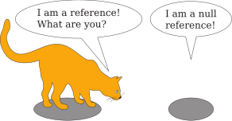

Ancient Science Publishers
Monograph 4 Elements of Software Design Patterns

Excerpt from the Chapter (Pattern Concept):
-
Definition. A pattern is a rule triad expressing a relation between:
-
1. a certain context defining the scope of applicability of the given pattern,
-
2. a problem detailing a certain system of conflicting forces which occurs repeatedly that the pattern resolves in that context and
-
3. a solution in a form of a certain software configuration which can be used repeatedly and uniquely to resolve the given system of forces themselves, wherever the context makes it relevant.
∎
-

The output of this rule triad is a pattern too.
It leads (but not limited) to the following key observations about pattern:
-
 It is both a thing and a process.
It is both a thing and a process.
-
It is both a description of a thing which is alive and a description of the process which will generate that thing.
-
It is both a thing which happens in the world and the rule which tells us how to create that thing.
-
It can exist at all scales and resolve almost any kind of conflicting forces.
-
Identification of what-why-when-where marks its inner structure explicit and sharable.
-
It starts with defining features worth abstracting.
-
Then it defines the problem, i.e. the field of forces which it brings into balance.
-
It is a sketch rather than a blue-print.
-
It can complement and compound another pattern(s).
-
It is generative and self-sustaining.
-
It is a micro-architecture.
-
It promotes design-reuse.
-
The exact range of contexts is defined where the stated problem occurs and where this particular solution to the problem is appropriate.
-
Each pattern describes a problem which occurs over and over again in our system and then describes the core of the solution to that problem in such a way that we can use this solution a
million times over, without ever doing it the same way twice.
Beyond its elements, each system is defined by a certain patterns of relationships among the elements, and these relationships are integral part of the elements to such an extent that the elements themselves are patterns of relationships. And finally, the so called elements get dissolved, leaving patterns of relationships behind, which is the actual thing that actually repeats itself and gives structure to the system.
Each one of these patterns \(\mathcal {P}_i\) is a morphological law onto itself, which establishes a set of relationships in the system in a given context of type \(\mathcal {C}\), i.e. \(\seteqnumber{0}{4.}{0}\) \begin{gather*} \mathcal {P}_i \triangleq \mathcal {C} \rightarrow \mathcal {R}\left (\ldots , \mathcal {P}_{i-1}, \mathcal {P}_{i+1}, \ldots \right ) \end{gather*} where \(\triangleq \) stands for is defined by. The parts (i.e, rest of the patterns except \(\mathcal {P}_i\)) \(\ldots , \mathcal {P}_{i-1}, \mathcal {P}_{i+1}, \ldots \) are related by the relationship \(\mathcal {R}\) within a context of type \(\mathcal {C}\).
Note that, each law or pattern is itself a pattern of relationships among the remaining laws (i.e. except itself), which are themselves just patterns of relationships again.
Therefore, a pattern is defined by formulating it in the form of a rule triad as depicted before, which establishes a relationship between a context, a system of (often conflicting) forces which arise in that context and configuration which allows these forces to resolve themselves in that context.
Hence, generic form of each pattern is:

Discovery of (the invariant features) pattern(s) always start with observation or purely abstract argument. This process is not sequential from the problem to the solution or vice versa. Rather it is a multidimensional global process to help identify a solid and reliable invariant which relates context, problem, solution in an unchanging way.
The statement of the problem and the forces helps to solidify the pattern which is responsible for making the system of forces come to an equilibrium. Thought it is still tentative, but clear enough to be shared.
There are two components in a pattern definition, which are empirical in nature, i.e. can be tested as true/false:
-
1. The problem is real, i.e. it is expressible as conflicting real forces within the stated context(s).
-
2. The configuration solves the problem, i.e. it deals with all the forces in the stated context(s).
Quality without a name is the living essence of a pattern.
Excerpt from the Chapter (Pattern Form):
Each (living) pattern has the same form for the sake of convenience and clarity. It has nine parts in the following sequence :
-
A picture is drawn to illustrate an archetypal example of the pattern.
-
 An introductory paragraph to set the context for the pattern.
An introductory paragraph to set the context for the pattern.
-
 The symbol ॐ marks the beginning of the problem the pattern addresses later.
The symbol ॐ marks the beginning of the problem the pattern addresses later.
-
 A headline set in bold-typeface to provide the essence of the problem.
A headline set in bold-typeface to provide the essence of the problem.
-
The body of the problem describing (but not limited to) the
-
empirical background of the pattern,
-
empirical evidence for its validity which sets the motivational tone too,
-
variations, i.e. the range of different ways of manifesting it in a software.
-
-
The solution set in bold-typeface, encoded in an instructional form, stating the exact steps to build the pattern. It illustrates the field of relationships needed to solve the stated problem in the stated context.
-
 A diagram that shows the solution as a labeled picture indicating its main components.
A diagram that shows the solution as a labeled picture indicating its main components.
-
 The symbol ॐ marking the end of the main body of the pattern.
The symbol ॐ marking the end of the main body of the pattern.
-
 A paragraph, which ties the pattern to all those smaller patterns in the pattern language, which are needed to complete this pattern, to embellish it, to fill it out.
A paragraph, which ties the pattern to all those smaller patterns in the pattern language, which are needed to complete this pattern, to embellish it, to fill it out.
This form serves the following two essential purposes :
-
1. to present each pattern connected to other patterns to help grasp the collection of all these patterns as a whole, as a pattern language, within which an infinite variety of combinations can be created.
-
2. to present the problem and solution of each pattern in such a way that it sets the exact tone of self-judgment and modifications without losing the central essence.
Excerpt from the Chapter (Null Object):
Do what you can to establish coherence in your software. I am smart because I do nothing!

\(\cdots \) consider now the character of settlements within the object references : what balance of real objects and null references is in keeping with the transparency ?
ॐ
Optionally null object references, where the result of a null check is to do nothing, will not come to balance until both the presence of a null reference and the absence of an object be treated in a consistent and transparent manner to establish an independent and coherent sphere of object references.
Out of a list of objects, some may not exist. Hence no service is expected in such cases which can be an acceptable behavior too. Acceptable inaction is represented at times with repetitive explicit checking for the optional null. Repetition and optional doesn’t go together. Absence of objects can be abstracted out to presence of objects doing nothing, i.e. conformance to the interface with no implied functionality. No-op is the correct operation. We need a way to represent the object with appropriate behavior that will allow us to treat all object references in a consistent and uniform way, devoid of special case consideration.
Typical scenarios under consideration are
-
1. Some object instances are not required to do anything because they correspond to null references.
-
2. These instances should be treated in the same manner as real instances to avoid explicit constraints.
-
3. There is a need to reuse the do nothing behavior to enforce consistent and repetitive usage.
Null Object patterns addresses all of these under a single umbrella, typically by encapsulating the do nothingness.